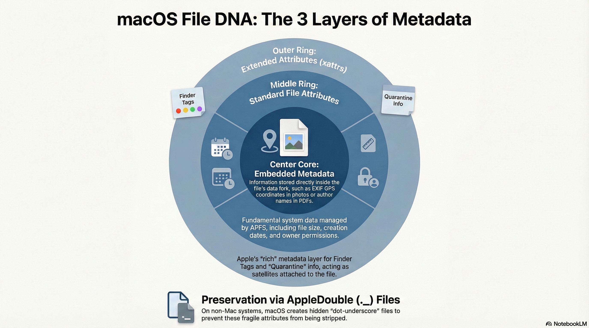
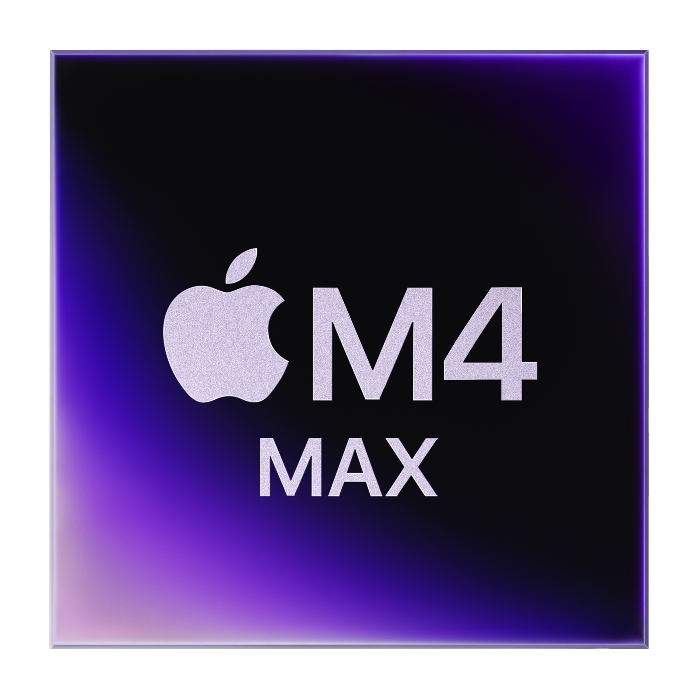
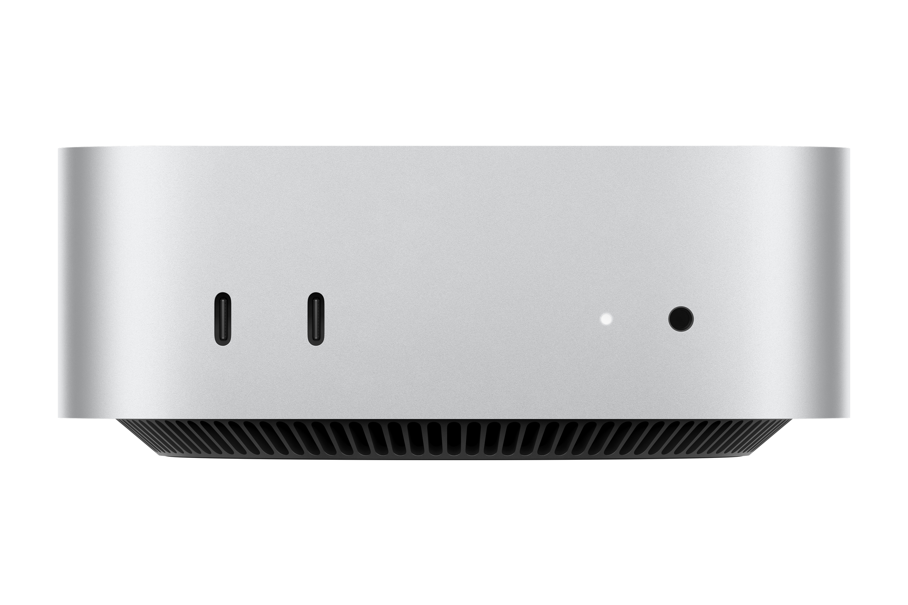
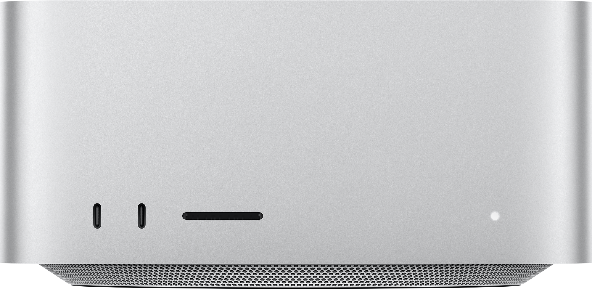
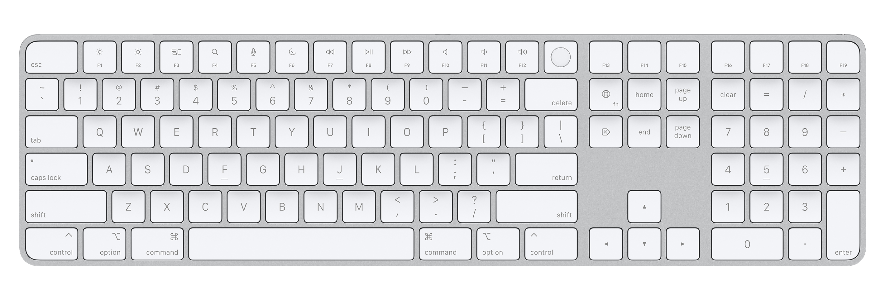
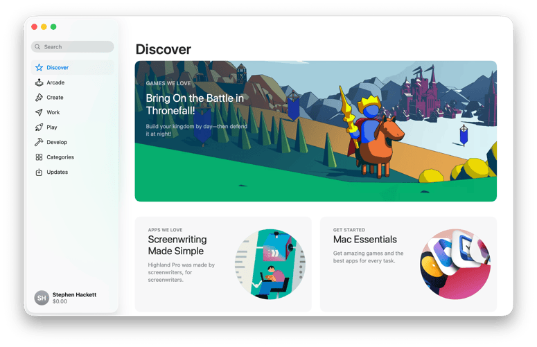
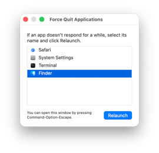

שיעור 05: אפליקציות ותהליכים¶
מדריך עזר לתלמיד
מטרות השיעור¶
- תהליכי התקנה
- ארגזי חול (Sandboxing)
- אבחון וטיפול בתקיעות
- הפצה ארגונית (VPP) [Image Recommendation]: A minimalist vector icon of the App Store "A" logo and an open cardboard box representing packages.
סקירה¶
מושגי יסוד (Core Concepts)¶
- App Store: החנות הרשמית של אפל לאפליקציות. כל אפליקציה כאן עוברת ביקורת (App Review), חתימה קריפטוגרפית ונוטריון (Notarization), ופועלת תחת מגבלות של "Sandbox" (Sandboxing).
- Package - PKG: קובץ התקנה המכיל אוגדן של קבצים והוראות (Scripts) לפיזורם במערכת הקבצים. משמש לרוב להתקנות מורכבות של תוכנות ארגוניות ולכלי שורת הפקודה.
- Disk Image - DMG / ASIF: "תמונת דיסק" וירטואלית. בגרסאות קודמות נפוצו קבצי UDZO/UDSP, וב-macOS 26 (Tahoe) אפל הציגה את פורמט ה-ASIF (Apple Sparse Image Format) היעיל במיוחד.
- Sandboxing - Sandbox: מנגנון אבטחה של macOS המגביל את הגישה של אפליקציה (בעיקר צד-שלישי ו-App Store) למשאבי מערכת, זיכרון וקבצים שאינם שייכים לה. המידע נשמר בתוך "Container" .
- Group Containers (DeepDive): תיקייה ייעודית (תחת
~/Library/Group Containers) המשמשת לאפליקציות שונות מאותו מפתח (לדוגמה: תוכנות חבילת Office) כדי לשתף מידע בארגז החול ביניהן. - Packages vs Bundles (DeepDive): היסטורית ישנה הבחנה דקה: Bundle הוא לרוב אפליקציה שמכילה קוד הרצה, בעוד Package היא תיקייה שמוצגת כקובץ יחיד אך אינה מכילה בהכרח קוד (כמו מסמך RTFD או Pages).
- App Translocation - Gatekeeper Path Randomization: מנגנון המונע מאפליקציות זדוניות שחולצו מקובץ ZIP למשל, לרוץ מתוך תיקיית ההורדות תוך פנייה לקבצים סמוכים. המערכת מריצה את האפליקציה ממיקום אקראי (Read-Only) בזיכרון.
- Force Quit: Force Quit - סגירה אגרסיבית של אפליקציה שאינה מגיבה (Not Responding) מבלי לאפשר לה לשמור נתונים.
- Volume Purchase Program - VPP / Apple Business Manager (ABM): תוכנית הרכישה הארגונית המאפשרת לארגונים לרכוש רישיונות לאפליקציות באופן מרוכז ולחלק אותן למשתמשים דרך ה-MDM.
- Self Service: Self Service, דמוי App Store פרטי של הארגון. משתמשים יכולים להתקין תוכנות ופרופילים המאושרים על ידי הארגון ללא צורך בסיסמת מנהל (Admin).
פקודות טרמינל מרכזיות (Terminal Commands)¶
כלי התקנות ודיסקים (installer & hdiutil)¶
-
sudo installer -pkg /path/to/package.pkg -target /התקנת חבילת PKG במצב "שקט" (Silent) ישירות לשורש הכונן. הפקודה הבסיסית ביותר להתקנת תוכנות ארגוניות מהטרמינל או דרך סקריפטים של ה-MDM. -
hdiutil attach /path/to/image.dmgעגינת (Mount) תמונת דיסק וירטואלית. מחזיר את נתיב הכונן החדש שנוצר (לרוב תחת/Volumes/Name). -
hdiutil detach /Volumes/ImageNameניתוק (Unmount) בטוח של תמונת דיסק או כונן חיצוני. -
hdiutil infoהצגת רשימה של כלל הדיסקים הווירטואליים שמעוגנים כרגע במערכת. -
diskutil image create blank --format ASIF --size 100G --volumeName myVolume imagePathיצירת תמונת דיסק ריקה בפורמט החדש של Tahoe - ASIF.
ניהול תהליכים ויציאה מאולצת (killall & kill)¶
-
killall "App Name"סגירת אפליקציה (שליחת פקודת Termination עדינה) לפי שם התהליך. לדוגמה:killall Safari. -
kill -9 [PID]Force Quit מיידית ואלימה (Force Quit) של תהליך באמצעות מספר מזהה (Process ID). הפקודה עוקפת כל מנגנון שמירה רגיל של האפליקציה וזהה לחלוטין לכפתור ה-Force Quit ב-Activity Monitor. -
topהצגת נתונים בזמן אמת של כל התהליכים הרצים במערכת והמשאבים שהם דורשים (CPU/RAM). לחיצה עלqתצא מהתצוגה.
הגדרות אפליקציה מוסתרות (defaults)¶
-
defaults read com.apple.Safariקריאת כלל קובץ ההגדרות (Plist) של אפליקציית ספארי השמור בתיקיית ה-Preferences. -
defaults write com.apple.screencapture type -string "png"כתיבת הגדרה ידנית (לדוגמה: שינוי פורמט צילומי המסך ל-PNG). -
defaults delete com.apple.Safariמחיקת קובץ ההגדרות לחלוטין. פעולה זו מחזירה את הגדרות האפליקציה למצב יצרן (שלב קריטי באיפוס אפליקציה מלא).
עדכוני מערכת וכלים (softwareupdate)¶
softwareupdate --install-rosetta --agree-to-licenseהתקנה מהירה ושקטה של סביבת התרגום Rosetta 2 למחשבי Apple Silicon (נדרש רבות עבור תוכנות התקנה ישנות).
ניהול Sandbox ואיפוס אפליקציות (Sandboxing & App Reset)¶
איפה אפליקציות שומרות את המידע שלהן?
- Preferences: תחת
~/Library/Preferences/com.domain.appname.plist - Application Support: תחת
~/Library/Application Support/AppName/ - Containers: אפליקציות מתוך ה-App Store או אפליקציות שמוגדרות מראש כאפליקציות Sandbox (Sandboxed), לא כותבות לתיקיות הכלליות שלמעלה. במקום זאת, כל הגישה שלהן מנותבת אל:
~/Library/Containers/[Bundle ID].
כיצד לאפס אפליקציית Sandbox (איפוס מוחלט):
- ודא שהאפליקציה סגורה לחלוטין (
killallאו Force Quit). - מחק את תיקיית ה-Container של האפליקציה בנתיב:
~/Library/Containers/[Bundle ID]. - מחק את הגדרות המערכת השמורות (אם קיימות מחוץ ל-Sandbox):
defaults delete [Bundle ID]. - הפעל את האפליקציה מחדש - היא תיווצר מחדש מאפס, כאילו הופעלה לראשונה.
קישורים מומלצים ולקריאה נוספת¶
- Check app installation and processes on Mac - מדריך של אפל שמסביר איך לבדוק אילו תהליכים ותוכנות רצים ברקע.
- Learn about App Store security protections - מאמר על מנגנוני האבטחה וה-Sandbox של חנות האפליקציות.
- Distribute content with mobile device management - מאמר למנהלים על הפצת תוכנות מרחוק באמצעות MDM.
- Explainer: the app sandbox - מאמר טכני מעמיק מבלוג חיצון על איך עובד ארגז החול (Sandbox) שמבודד אפליקציות.
- Explainer: Disk images - סקירה על ההיסטוריה והמבנה של קובצי DMG.
- macOS Tahoe brings a new disk image format - מאמר טכני שמסביר על הפורמט החדש של קובצי התקנה ב-macOS 26.
סרטון סיכום¶











המחשה ויזואלית (עזר לתלמיד)
תמונות אלו ממחישות את הממשק או המנגנון הרלוונטי לנושא השיעור.